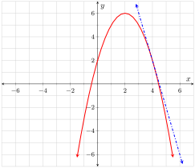

Use the graph to find the slope of the secant line to \(z\) between the points where \(x=-1\) and \(x=2\text{.}\) Check your simplified difference quotient for \(z\) by using it to find the slope of the same secant line.
Answer.
The slope is \(3\text{.}\)
Solution.
The rise between the two points is \(9\) and the run is \(3\text{,}\) so the slope between the two points is given by \(\frac{9}{3}=3\text{.}\)
Using the difference quotient, if we let \(x=-1\) and \(h=3\) we get
Replace \(x\) with \(4\) in your difference quotient formula and simplify the result. Then copy Table 1.4.2 onto your paper and fill in the missing values.
As the value of \(h\) gets closer to \(0\text{,}\) the values in the \(y\) column of Table 1.4.2 appear to be converging on a single number; what is this number?
Answer.
\(-4\)
Solution.
The values are converging on \(-4\text{.}\)
5.
The value found in Exercise 1.4.4 is called the slope of the tangent line to \(z\) at \(4\). Draw onto Figure 1.4.1 the line that passes through the point \(\point{4}{2}\) with this slope. The line you just drew is called the tangent line to \(z\) at \(4\).
Answer.

Solution.
Exercise Group.
Find the difference quotient for each function showing all relevant steps in an organized manner.
Suppose that an object is tossed directly upward in the air in such a way that the elevation of the object (measured in ft) is given by the function \(\fe{s}{t}=150+60t-16t^2\) where \(t\) is the amount of time that has passed since the object was tossed (measure in seconds).
Use the difference quotient to determine the average velocity of the object over the interval \(\cinterval{4}{4.2}\) and then verify the value by calculating \(\frac{\fe{s}{4.2}-\fe{s}{4}}{4.2-4}\text{.}\)
Answer.
-71.2 ft⁄s
Solution.
Letting \(t=4\) and \(h=0.2\) we have (from the difference quotient):
Several applied functions are given below. In each case, find the indicated quantity (including unit) and interpret the value in the context of the application.
13.
The velocity, \(v\text{,}\) of a roller coaster (in ft⁄s) is given by
where \(t\) is the amount of time (s) that has passed since the coaster topped the first hill. Find and interpret \(\frac{\fe{v}{7.5}-\fe{v}{0}}{7.5-0}\text{.}\)
Answer.
The average rate of change in the coaster’s velocity over the first 7.5 s of descent is \(-13\frac{1}{3}\,\frac{\text{ft/s}}{\text{s}}\text{.}\)
Solution.
\(\frac{\fe{v}{7.5}-\fe{v}{0}}{7.5-0}=-13\frac{1}{3}\text{.}\) This value tells us that during the first 7.5 s of descent, the average rate of change in the coaster’s velocity is \(-13\frac{1}{3}\,\frac{\text{ft/s}}{\text{s}}\text{.}\) In other words, on average, with each passing second the velocity is \(13\frac{1}{3}\,\text{ft}{s}\) less than it was the preceding second. We could also say that the average acceleration experienced by the coaster over the first 7.5 s of descent is \(-13\frac{1}{3}\,\frac{\text{ft/s}}{\text{s}}\text{.}\)
14.
The elevation of a ping pong ball relative to the table top (in m) is given by the function \(\fe{h}{t}=1.1\abs{\fe{\cos}{\frac{2\pi t}{3}}}\) where \(t\) is the amount of time (s) that has passed since the ball went into play. Find and interpret \(\frac{\fe{h}{3}-\fe{h}{1.5}}{3-1.5}\text{.}\)
Answer.
The average velocity experienced by the ball between the 1.5th second of play and the third second of play is 0 m⁄s.
Solution.
\(\frac{\fe{h}{3}-\fe{h}{1.5}}{3-1.5}=0\text{.}\) This value tells us that the average velocity experienced by the ball between the 1.5th second of play and the third second of play is 0 m⁄s. Please note that this does not imply that the ball doesn’t move; it simply means that the ball is at the same elevation at the two times.
15.
The period of a pendulum (s) is given by \(\fe{P}{x}=\frac{6}{x+1}\) where \(x\) is the number of swings the pendulum has made. Find and interpret \(\frac{\fe{P}{29}-\fe{P}{1}}{29-1}\text{.}\)
Answer.
Between the first swing and the 29th swing the average rate of change in the pendulum’s period is \(-0.1\frac{\text{s}}{\text{swing}}\text{.}\)
Solution.
\(\frac{\fe{P}{29}-\fe{P}{1}}{29-1}=-0.1\text{.}\) This value tells us that between the first swing and the 29th swing the average rate of change in the pendulum’s period is \(-0.1\frac{\text{s}}{\text{swing}}\text{.}\) In other words, on average, with each passing swing the period decreases by a tenth of a second.
16.
The acceleration of a rocket (mph⁄s) is given by \(\fe{a}{t}=0.02+0.13t\) where \(t\) is the amount of time (s) that has passed since lift-off. Find and interpret \(\frac{\fe{a}{120}-\fe{a}{60}}{120-60}\text{.}\)
Answer.
During the second minute of flight, the average rate of change in the rocket’s acceleration is 0.13 mph⁄s·s.
Solution.
\(\frac{\fe{a}{120}-\fe{a}{60}}{120-60}=0.13\text{.}\) This value tells us that during the second minute of flight, the average rate of change in the rocket’s acceleration is 0.13 mph⁄s·s. In other words, on average, with each passing second the acceleration is 0.13 mph⁄s more than it was the preceding second. You might have noticed that since the acceleration function is linear, the rate of change in the acceleration is constant. That is, with each passing second the acceleration actually is0.13 mph⁄s more than it was the preceding second.